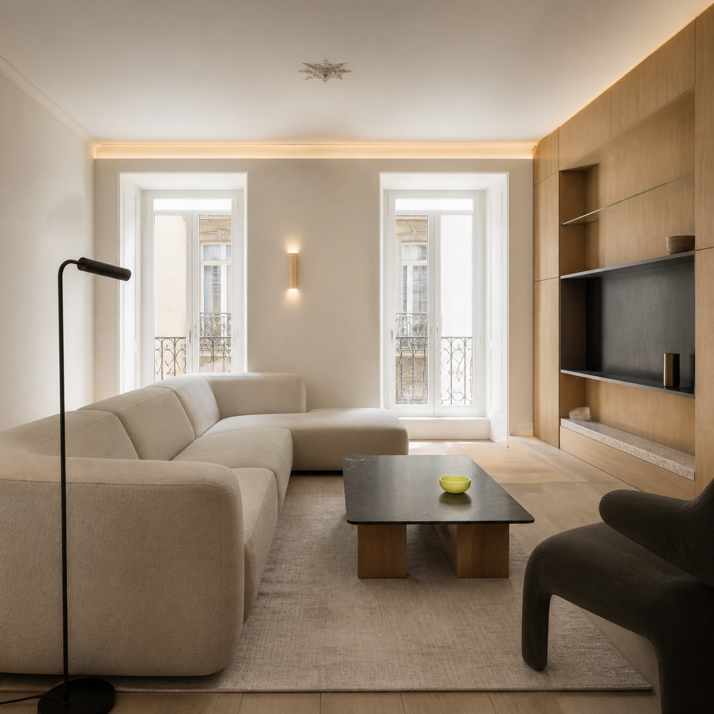

Luz, materiais e proporções: uma sala desenhada para viver todos os dias.
Obra Lisboa · revisão de linguagem
Design de interiores · imagem original gerada

Luz, materiais e proporções: uma sala desenhada para viver todos os dias.
Guia prático · carrossel de 5 lâminas
O revestimento é só a superfície. A qualidade começa nas decisões que ficam escondidas.
Definir percursos, cotas e pontos de manutenção reduz intervenções futuras e ajuda a coordenar todas as especialidades.

Uma visualização técnica ajuda a perceber o conjunto — não substitui projeto nem dimensionamento por especialistas.
• impermeabilização
• pendentes e escoamento
• acessos de manutenção
• ventilação
Um processo bem coordenado protege o orçamento, o prazo e o conforto do espaço final.